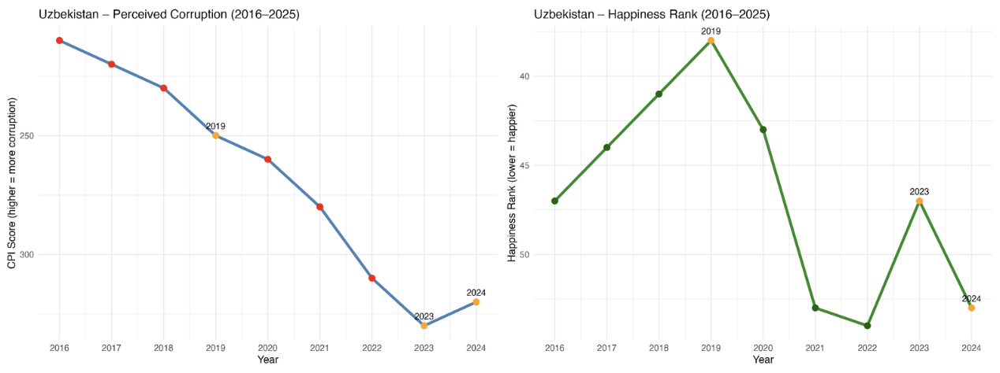

Understanding Global Happiness Through Economic, Social, and Institutional Factors

Introduction: motivations and importance of analysis
This analysis aims to better understand the factors that truly impact quality of life across countries worldwide. While happiness is often discussed broadly, our study seeks to identify which economic, environmental, and social variables are most strongly associated with national well-being.
The findings have practical implications for both organizations and policymakers. For companies, the analysis can help inform decisions about employee incentives by comparing the relative importance of factors such as salary levels versus work-life balance measures like paid vacation time. For governments, this research can provide evidence-based insights to guide public policy focused on improving societal well-being, including investments in income growth, anti-corruption efforts, labor regulations, and quality-of-life initiatives.
Overall, by combining multiple global datasets and examining changes over time, this analysis contributes to a more comprehensive understanding of happiness and well-being and highlights actionable areas for improving quality of life at both the organizational and national levels.
Beyond identifying which factors matter most, this study also helps clarify how their importance can change as countries develop. Our results suggest that while economic growth remains essential, especially in lower-income contexts, non-economic factors such as trust in institutions and work-life balance become increasingly important once basic needs are met.
By highlighting these shifts, the analysis encourages a more balanced approach to improving well-being, one that goes beyond income alone and focuses on creating societies where people not only live better, but also feel better about their lives.
How specific analyses help to address the motivating question
Our analysis directly addresses the motivating question by examining how different economic, environmental, and social factors relate to national happiness and quality of life. We look at these variables across countries and over time.
By using data from multiple years, we can see trends and how events like economic changes, policy reforms, or corruption scandals affect happiness. This helps us understand not just which countries are happiest, but why happiness changes over time.
We compare several factors to see which have the biggest impact on happiness. These include income (GDP per capita), work-life balance (paid vacation days), environment (temperature and precipitation), and governance (corruption perception). This lets us explore questions like: Are people happier in warmer countries? Does earning more money make people happier? Do more vacation days improve well-being? How does corruption affect happiness?
We use analyses to measure how strongly these factors are related to happiness. Looking at these patterns across countries and over time shows whether relationships are consistent or vary by context.
We also use country-specific case studies to examine particular events, such as corruption scandals or policy changes, and how they affect happiness. By combining objective measures (income, vacation days, weather, corruption trends) with subjective happiness scores, we can get a clearer picture of what influences well-being.
Our data comes from a variety of sources. The World Happiness Report provides happiness scores and factors for most countries. We also use the World Bank for climate data and the OECD for vacation and leisure hours. Combining these sources allows us to study both objective and subjective influences on happiness.
Overall, this approach helps us understand which factors affect national happiness and how they work together. It also gives insights that policymakers and organizations can use to improve well-being. By comparing economic incentives with quality-of-life factors, our analysis highlights how priorities may shift once basic needs are met, offering practical guidance for designing policies and workplace incentives that better support long-term happiness.
Choice of data used, including discussion of any limitations; Our primary dataset is the World Happiness Report, which provides annual happiness (ladder) scores and contributing factors for most countries worldwide. This dataset is clean and well-structured, with only a small number of countries having limited score data, making it suitable for cross-country comparison in specific years. The inclusion of standardized ladder scores and factor columns (such as GDP per capita and perceptions of corruption) allows for easy comparison and integration with other datasets. To analyze trends over time, we use yearly versions of the dataset, which are continuously updated to maintain relevance. However, happiness remains a subjective measure and may be influenced by cultural differences in how well-being is reported.
To supplement this dataset, we incorporate data from the World Bank Group and the OECD, which provide reliable and consistent annual records on weather conditions and average paid vacation days. These datasets align well with our research purpose by capturing environmental and lifestyle factors that may influence national happiness. Country and year identifiers align closely with those in the World Happiness dataset, enabling multivariable analysis. While coverage is comprehensive, some missing values exist for small island nations or territories. Additionally, definitions across datasets may vary, which can make direct comparisons more challenging and requires careful data alignment.
We also use the Corruption Perceptions Index (CPI) from Our World in Data to assess corruption more objectively. While the happiness dataset reflects perceptions of how corruption affects well-being, it does not measure actual corruption levels. The CPI provides country-level scores from 2019–2025 based on expert assessments and surveys, allowing us to compare corruption levels with happiness rankings in greater depth. Nonetheless, the CPI remains perception-based and should be interpreted cautiously.
Several broader limitations apply across all datasets. The COVID-19 pandemic may have influenced data from 2022–2023, particularly in areas such as income, vacation availability, and reported happiness. Additionally, while our analysis explores relationships between variables such as GDP, climate, vacation days, corruption, and happiness, correlation does not imply causation, and observed associations may not reflect direct causal effects. Finally, combining multiple continuously updated data sources requires careful alignment across countries and years, which may introduce minor inconsistencies.
Visualization of most important findings
To clearly communicate the key insights from our analysis, we created a set of visualizations that highlight the main factors influencing national happiness. Scatter plots are used to show the relationship between GDP per capita and happiness scores, illustrating how income levels relate to well-being across countries. These plots are further strengthened by grouping countries into income categories, which makes it easier to compare patterns among low-, middle-, and high-income nations.
Corruption

This visualization for corruption In 2023, shows how countries with low corruption tend to rank higher in happiness, including Finland (CPI 87) and Denmark (CPI 90) that are the two happiest countries.
Most corrupt countries generally rank lower, though suprisingly there are exceptions: Nicaragua (high corruption) ranks 43rd, Mexico 25th, and Kuwait 13th.
In addition, some low-corruption countries, like Singapore (CPI 83), do not rank among the very happiest, showing other factors also influence happiness.

When focusing on a specific country - Uzbekistan, we find that between 2023–2024, changes in corruption levels corresponded with shifts in happiness, implying corruption has influence on the country’s well-being.In 2023, it also coincided with a presidential election, and more government transparency.
However, surprisingly in 2019, happiness peaked despite relatively high corruption. This is likely due to other factors driving happiness more than corruption, such as many reforms taking place during this time—including job creation, and improvements in health, education, and infrastructure.
Weather
Additional scatter plots examine environmental factors such as average temperature and precipitation alongside lifestyle indicators like paid vacation days, helping us explore possible connections between climate, work-life balance, and happiness. What we found is that temperature does not strongly predict happiness, the least of all the factors we looked at. The warmest countries tend to be less happy, but this is likely due to economic and social factors, not heat itself. The coldest countries include some of the happiest in the world. Countries with moderate temperatures show mixed results. Overall, climate alone cannot explain national happiness .
Vacation vs Income
One central question asks how pay compares to time off in supporting well-being. While earnings are often seen as the main path to a good life, this work finds that their role shifts once people have enough to live on securely. To look at this more closely, we set side-by-side the links between national happiness and income, and between happiness and paid leave.
We used average income and mandated vacation days from international sources to see how each tied to life satisfaction scores. A clear trend emerges with income. In places where earnings are lower, rises in average income connect strongly to greater happiness. This link is clearest in less wealthy nations, where more money often means better basics: food, housing, medicine, and safety.
But in richer countries, the curve starts to level off. Further bumps in wealth link to only tiny gains in happiness. It seems that once needs are covered, more money alone does less for well-being. This fits with older ideas about money’s shrinking returns and backs the thought that finances count most up to a threshold.
Time off shows a different story. The tie between vacation days and happiness is less powerful than that for income in poorer places. Yet among wealthier nations, it gains relevance. Nations offering more leave often group at the higher end of happiness scales. This hints that balancing work and life matters more once people are financially set. While leave alone is not a strong predictor, it seems to add to quality of life where extra cash brings little added benefit.
Put together, these points suggest income and vacation are not rivals but follow a sequence. Money matters most when it helps meet fundamental needs. Benefits like time away grow in value once those foundations are secure. For employers, this means raises may boost satisfaction more for lower-paid staff, while extra leave or flexibility could mean more to those already earning well.
At the country level, this helps explain why nations with similar wealth sometimes report different happiness. Places that pair a solid economy with policies that support time outside work may see greater well-being than those focused only on income growth. It strengthens the project’s wider takeaway: happiness doesn’t hang on one thing, but on how economic security, trust in institutions, and day-to-day living conditions weave together over the long run.
Time series and line charts are used to track changes in happiness over multiple years. This allows us to observe how major global and country-specific events—such as economic crises, policy reforms, or corruption scandals—affect national well-being. These visualizations capture both short-term shocks and long-term trends, providing a more dynamic perspective than single-year analyses. For selected countries, we include focused case-study graphs that show shifts in happiness before and after significant events, offering deeper insight into how specific stressors or improvements influence people’s perceptions of well-being.
To present a comprehensive picture, we combine scatter plots, line charts, and grouped bar charts. Using multiple chart types allows us to highlight both relationships between variables and changes in happiness over time. Clear color coding, labeling, and well-designed legends improve readability and help make complex data patterns easier to understand. Overall, these visualizations not only emphasize key statistical relationships but also make the findings accessible to a broad audience, including policymakers, researchers, and the general public. By visually linking economic, environmental, and social factors to national happiness outcomes, the charts help translate quantitative results into meaningful, actionable insights for decision-making.
Beyond supporting the statistical results, these visualizations also help tell a clearer story about happiness. Seeing the data visually makes it easier to recognize patterns that might be overlooked in tables alone, such as where income gains begin to level off or where improvements in work-life balance align with higher happiness scores. In this way, the charts do more than present data—they help connect the numbers to real-world experiences, making the results more relatable and easier to apply to policy and organizational decisions.
Relation to prior work
The World Happiness Report and similar studies aim to understand how happiness is measured and already identify key factors associated with national happiness. To differentiate our work, we focus on how happiness scores have changed over time, particularly around major global and country specific events, to assess their impact.
Additionally, the original report does not directly incorporate variables such as weather conditions or average vacation days. We address this gap by supplementing the dataset with external sources to examine whether these factors also influence happiness.
Rather than analyzing all countries at a broad level, we also conduct deeper case studies of select countries experiencing notable events, such as corruption scandals. This approach allows us to better understand how specific stressors or improvements shape happiness trends.
Finally, we combine multiple reputable global datasets including the World Bank, OECD, and Our World in Data to provide a multidimensional perspective. By analyzing both objective measures such as GDP, temperature, and vacation days and subjective measures such as happiness scores and perceptions of corruption, we explore how different types of variables interact to influence happiness.
By taking this approach, our project moves beyond simple rankings and averages to better explain why happiness changes and which factors appear to matter most in different contexts. This helps bridge the gap between broad global studies and more applied, policy relevant insights. Our work also adds value by directly comparing economic incentives such as income growth with quality of life factors such as work life balance, offering a clearer picture of how priorities may shift as countries become wealthier. In doing so, we contribute to the existing literature by emphasizing that happiness is not driven by a single factor, but by the way economic, social, and institutional conditions work together over time.
In addition, our findings support and extend prior research that highlights diminishing returns to income, while also showing that non monetary factors can become increasingly important once basic economic needs are met.
By explicitly integrating work life balance and governance into the analysis, our study reinforces the idea that sustainable improvements in happiness require more than economic growth alone. This perspective aligns with and builds upon existing literature, while offering practical insights that can inform both public policy and organizational decision making.
Potential next steps
Future research could expand on this analysis in several meaningful ways. One clear next step would be to include additional measures of well-being, such as mental health outcomes, access to healthcare, and education quality. While income and vacation time explain a large part of happiness differences across countries, they do not capture everything that shapes how people feel about their lives. Including these factors could help explain why some countries are happier than others even when their income levels or work-life balance policies are similar.
Another important extension would be to look at a longer time period, especially to better understand how countries recover from major shocks like the COVID-19 pandemic. Happiness levels during and after the pandemic were influenced by many temporary factors, and a longer time horizon would make it easier to separate short-term disruptions from lasting changes in well-being. Using more advanced statistical methods, such as fixed-effects or instrumental variable models, could also strengthen the analysis by helping distinguish correlation from causation and accounting for country-specific characteristics that do not change over time.
Future work could also benefit from including more in-depth country case studies. Looking closely at countries that have experienced major policy reforms, labor law changes, or shifts in corruption levels would provide a clearer picture of how these events affect happiness in practice. Comparing countries with different paths—for example, those that successfully reduced corruption versus those where corruption worsened—could offer valuable insights into which policies are most effective at improving well-being.
Finally, a particularly interesting direction for future research would be to more directly combine the different findings to identify clear “tipping points.” For instance, it would be useful to estimate the income level at which additional earnings no longer increase happiness as much as improvements in work-life balance, such as more vacation time. Identifying these thresholds would be highly relevant for both policymakers and employers, helping them design policies and incentive structures that better reflect what people actually value once their basic economic needs are met.